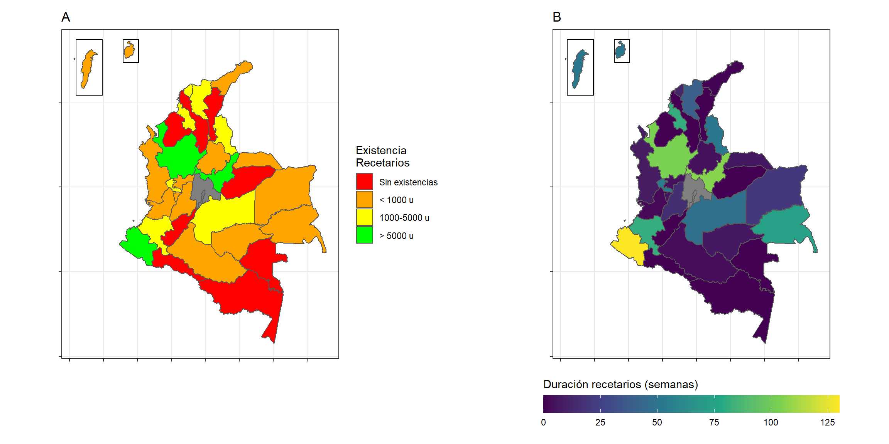
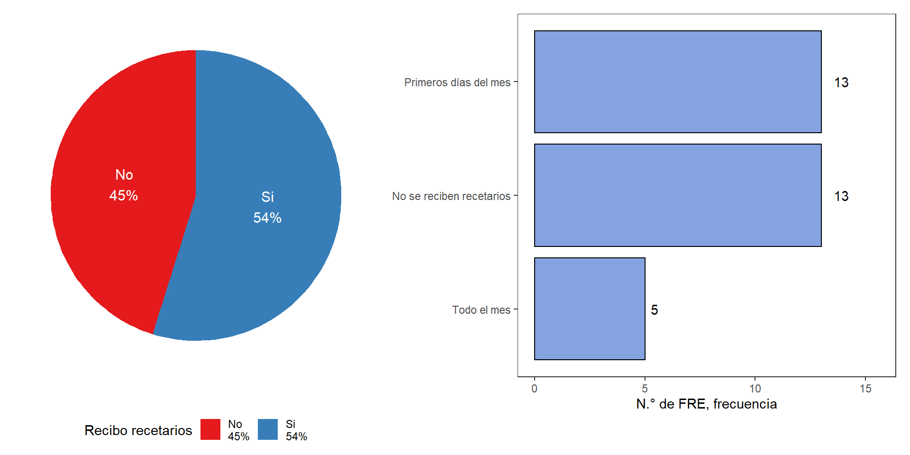
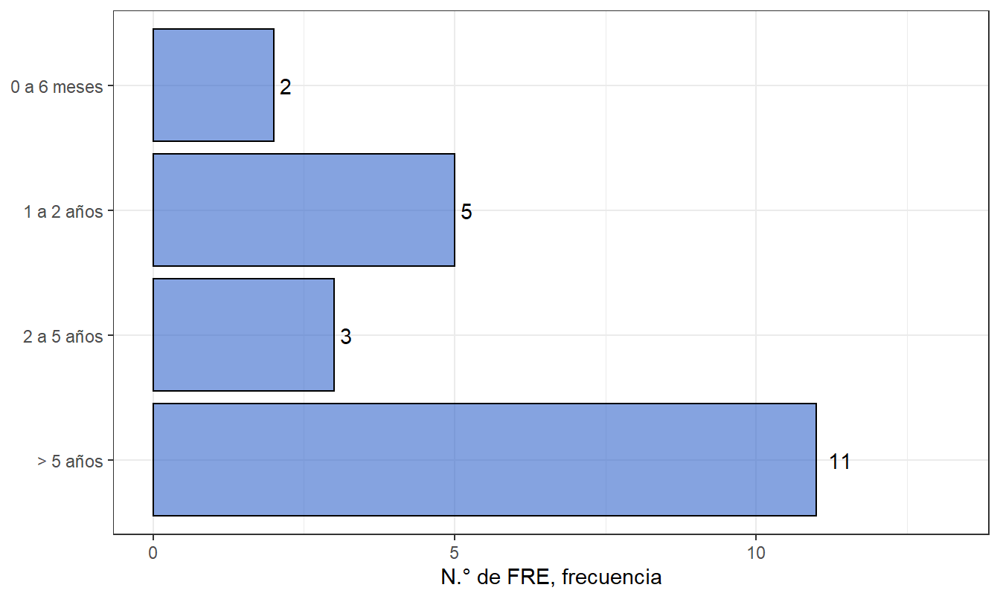
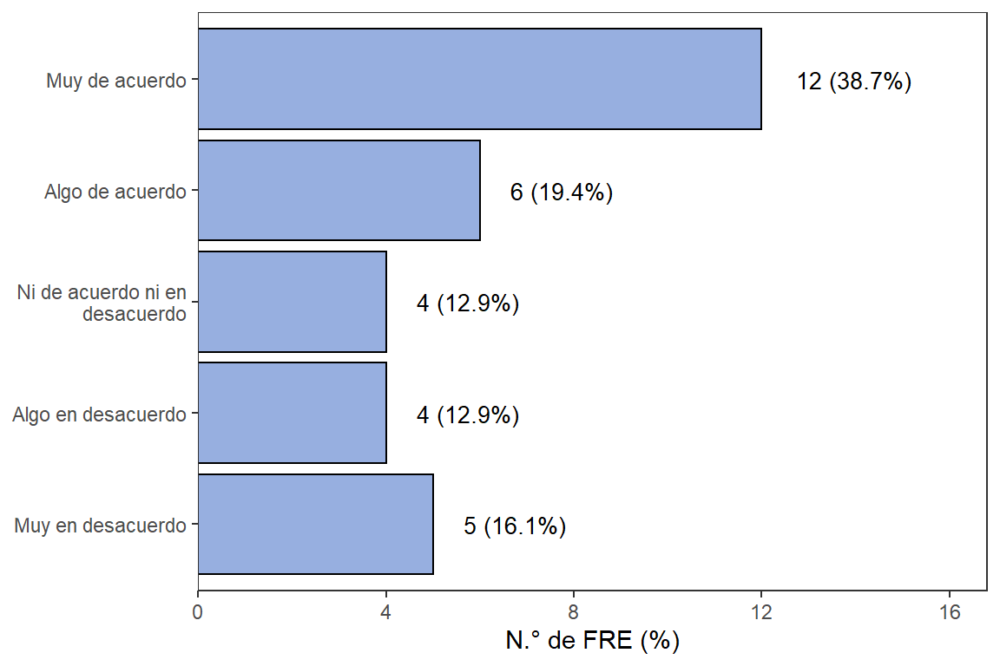

4.2 Recetarios oficiales
Figura 4.12: N.° de existencias de recetarios en el FRE
Figura 4.13: N.° de recetarios circulantes en el departamento

Figura 4.14: Duración de existencia de recetarios en el FRE

Figura 4.15: N.° de prescripciones por recetario
Figura 4.16: Comparativo de costo vs precio de recetarios por departamento

Figura 4.17: Comparativo de costo vs precio y márgen de beneficio

Figura 4.18: Comparativo de costo vs precio y márgen de beneficio (2)

Figura 4.19: Precio de venta de recetario por prescripción

Figura 4.20: Modalidad de selección para contratos de adquisición de recetarios

Figura 4.21: Tiempo de demora para adquisición de recetarios
Figura 4.22: Proporción de FRE que diligencian campos en BD de venta de recetarios

Figura 4.23: Actividades realizadas por el FRE para el seguimiento del uso de recetarios

Figura 4.24: Frecuencia de revisión de existencia de recetarios

Figura 4.25: Medidas de seguridad en los recetarios

Figura 4.26: Comparativo de márgen de ganancia de recetarios

Figura 4.27: Recibo de recetarios de instituciones inscritas
Figura 4.28: Tiempo de recepción de recetarios oficiales desde IPS

Figura 4.29: Tiempo de archivo de los recetarios oficiales en los FRE
Figura 4.30: Medidas de seguridad en almacenamiento de recetarios

Figura 4.31: Proporción de FRE que diligencian en campo de ventas de recetarios

Figura 4.32: Opinión sobre la implementación del Recetario Oficial Electrónico (ROE)
Figura 4.33: Tiempo de demora en la venta de recetarios oficiales a clientes